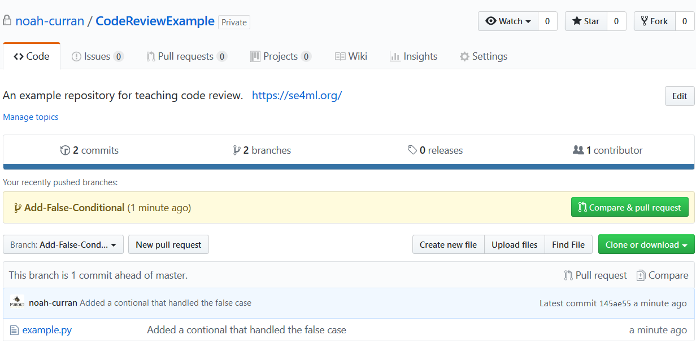
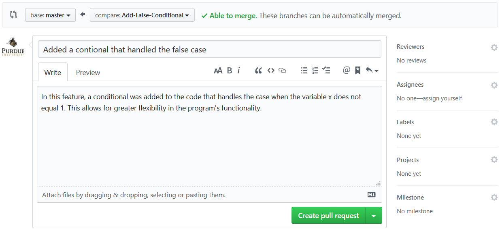

Code Review¶
Warning
This chapter is in draft status.
Code review is a software quality assurance activity during which a program is evaluate against a standardized list of expectations. During the evaluation, the program is carefully inspected for bugs that the original developer overlooked. Without standards to uphold, code reviewers will miss defects due to improper code review techniques.
This chapter begins with a thorough description of code review and its benefits; then, it discusses how to initiate a code review followed by an extensive walk-through on how to perform a code review from start to finish.
Modern Code Review¶
In the past, the author of a code change would sit down with reviewers to go through the code and find defects. However, it was found that code reviews with meetings consumed significantly more time and money than code reviews without meetings without providing a significant increase in defect detection [Johnson-Tjahjono]. As a solution, code reviewers began to employ tools to make the process asynchronous, which means the reviewer can inspect code at any time. Through the use of source control tools, code writers began to make small, relevant changes rather than large, intricate changes. This approach came to be known as modern code review.
Both open-source and industry software projects utilize modern code review [Sadowski-Soderberg-Bacchelli]—and for good reasons: the reported benefits from reviewing code are abundant. While code reviews require a large time investment, an impressive return on investment has been shown. For instance, at Hewlett-Packard, code review was found to reduce the time for an application to get to market by 1.8 months [Grady-Van-Slack]. It was further shown that code review has many positive side effects. Researchers at Microsoft have found that code review acts as a transfer of knowledge between the code reviewer and reviewee, increases team participation, and helps provide a productive way of finding alternative solutions to problems [Bacchelli-Bird]. The magnitude of these benefits greatly depends on the skill-level of the code reviewers involved. Therefore, it is critical to choose highly experienced reviewers when submitting code for inspection.
Locating overlooked defects is the main motive for reviewing code submitted for inspection. These defects are generally split into two categories: functionality and evolvability defects. When discussing functionality defects during an inspection, the code reviewer is typically indicating that a code of code has logical issues. On the other hand, evolvability defects describe issues with the organization of code or the contents of documentation [Mantyla-Lassenius]. Of the two kinds of defects, evolvability defects are the most damaging to a project over the course of the development life cycle. This is due to the large time investment required in order to rewrite a piece of software that has matured around evolvability defects. Unfortunately, they also happen to be the most common; therefore, most of efforts of code review are spent locating these kinds of bugs.
How To Start A Code Review¶
General Steps To Start A Code Review¶
Make sure your local commits have been pushed to your working branch/fork. You can accomplish this by running:
$ git push origin HEAD
Using a project’s respective version control service (e.g. GitHub, BitBucket), create a pull request to merge your commits into the parent version. Provide a title for what the feature adds and a longer description with a change log. Figure 30 and Figure 31 demonstrate an example pull request in GitHub.
Figure 30 Press “Compare & Pull Request” to review your changes and submit a pull request.¶
Figure 31 Pull requests should have a title summarizing the new feature and a comment giving a more descriptive explanation of the changes the pull request will make.¶
Request for another developer of the project to review your changes. Ideally, they should be an expert of the methods used to create the changes.
Wait for (or bug) the assigned code reviewer to look over your changes. They may ask for you to clarify your methods or ask for you to make additional changes, so make sure you regularly check the pull request until it is rejected or accepted.
Making Nano-Commits¶
Nano-committing is the act of submitting code for review in small, homogenous portions. In other words, the code is meant to complete a sub-task of the overarching feature being implemented. During the development process, making nano-commits can you help keep track of the work-flow. For instance, if a bug is found, then you can sift through the small changes until the bug either disappears or changes. This will help you make the necessary changes at the root, keeping the fix clean.
Some tasks you may consider keeping as separate commits are:
Refracting code before making changes to its logic;
Adding or modifying documentation;
Fixing a bug or creating a small feature;
Or changing configuration settings.
Keep in mind that you, as the developer, are responsible for making code as smooth to review as possible. Nano-commits can aid the code reviewer to follow your work-flow easily. Furthermore, while smaller commit sizes greatly reduce the likelihood of creating bugs [Purushothaman-Perry], they still pose a risk and should be reviewed for correctness.
Ensuring Your Code Is Complete¶
Before committing your code, it is wise to do a personal code review to locate as many issues as you can before passing it along to another person. In doing so, you will avoid potentially wasting time on several more iterations of code review than necessary [Humphrey]. While you perform the personal code review, you should keep a checklist of common mistakes to look for. By utilizing a checklist, you will ensure both efficiency and consistency from your personal code reviews.
Furthermore, it is important to be courteous of your code reviewer’s time. Your code should be ready for customers and void of any obvious bugs. Ideally, the code reviewer should only have to make comments regarding the implementation and not about major issues that need fixed. A study from Microsoft found that only around 15% of comments during code review address bugs [Czerwonka-Greiler-Tilford], which indicates a greater emphasis on other areas, such as code styling or long-term maintainability. It is also important to keep the responsibilities of the code review in mind: it is not their job to fix your bugs; their purpose is to notice and bring small, easy-to-miss issues to your attention for you to go back and fix. If you submit incomplete code with known issues, then you waste both your and your code reviewer’s time. In order to collaborate as a team and achieve results, it is important to remain considerate of your collaborators efforts [Dreu-Weingart].
A change that causes external features to fail is a less obvious sign of incomplete code. With an extensive system of unit tests, these issues are more obvious by validating that a change does not damage older features. With this in mind, it is vital to implement unit tests alongside new features. Implementation of unit tests guarantees protection from hidden bugs. In a similar vein, failure to compile is another sign of a project containing incomplete code. The error output of the compiler will normally indicate where the issue is located, so it is vital to read and understand what it says. It is crucial to verify that none of the unit tests fail and the build successfully compiles before submitting the change for a code review.
What to Review¶
For experts, knowing what to review is almost second nature. However, for those just learning how to review code, it is crucial to have a checklist of standards. While reviewing code, you should refer to the checklist and ensure that every criteria has been met. In doing so, you will avoid missing vital steps that may catch many defects.
It is important to note that extreme caution must be used while relying entirely on the checklist during code reviews. Unfortunately, here are too many possible kinds of defects, making it impossible to cover all of them within a checklist; therefore, as a reviewer, you must develop an ability to detect unique defects on the fly.
Nevertheless, a checklist is helpful for learning, so please use the following sections as guidance while reviewing code.
Code Formatting and Styling¶
As a reviewer, it is vital to ensure the submitted code meets the project’s code formatting standards. It can take a long time to manually check every standard, so utilizing automatic formatting tools helps boost the efficiency of a code review. Oftentimes, these tools come equipped with the ability to verify that the input files pass all the standards. For instance, if your codebase is written in Python and you are looking to follow the pep8 standards, then you can do the following:
$ pip install --user autopep8
$ find . -iname *.py -exec autopep8 --verbose --aggressive --aggressive -diff {}
The above commands first install autopep8 to the your user Python
install directory. This will allow you to use the auto formatter on any Python
project you write or review. Then, the command is recursively executed on every
Python file within the current directory and all of its subdirectories. The use
of the --diff flag only prints the fixed violations to the console, leaving
the files unchanged. If you want to change the contents of the file, use --in-line
instead of --diff. See Figure 32 for a before and after comparison
of one file that has been changed with autopep8.
Figure 32 Before (left) and after (right) using the autopep8 auto-formatter. Notice how the code is much easier to read after it has been formatted properly. For code to be readable, it is vital for it to be properly formatted. Example code is from https://pypi.org/project/autopep8/.¶
While tools that automate the process are extremely helpful, they do not catch every formatting issue. After applying the auto-formatter, you must double-check each file under review ensure the auto-formatter did not miss any important standards and did not raise a false-positive. In the case of the latter issue, auto-formatter tools often come equipped with the ability to suppress the false-positive. Refer to the documentation of the auto- formatter you are using for how to do this.
There are also some standards that automated tools cannot detect. These tend to rely on human choice, such as proper method and variable names. For instance, take the following example:
#!/usr/bin/python3
# badnaming.py
def printadd(x1, x2):
print(x1, "/", x2, "=", x1/x2)
if __name__== "__main__":
printadd(6, 3)
You should notice two things that are wrong with this code. First, the method’s name misleads the user from its actual function. A good method name should describe exactly what its action is. Second, the names of the function’s parameters are vague. While they are not incorrect, for the sake of readability, it is advised to give a clear meaning behind their values. As a code reviewer, you will want to point out that the name choices used here are unclear, and advise the code reviewee to change the names. When they resubmit the code for review, you should see similar code to below.
#!/usr/bin/python3
# goodnaming.py
def printdivide(dividend, divisor):
print(dividend, "/", divisor, "=", dividend/divisor)
if __name__== "__main__":
printdivide(6, 3)
Another common mistake to keep an eye out for are magic numbers, or constants that are hard-coded into an algorithm. The following code demonstrates an important instance where this error occurs.
#!/usr/bin/python3
# magicnumbers.py
class MyMonth:
def __init__(self, month):
self.month = month
def printmonth(self):
if self.month == 1:
print("January")
elif self.month == 2:
print("February")
# ...
elif self.month == 12:
print("December")
else:
print("Not a real month")
if __name__== "__main__":
month = MyMonth(3)
month.printmonth()
Magic numbers should be replaced by either stand alone constants or an enumeration of constant values. In this instance, it is more appropriate to use enumeration to declare the months as constants. Even though the order of months is common knowledge, it helps preserve the readability of code to declare the numerical values of the months as an appropriately labeled constant. In python, to obtain the library for enumeration, you must do
$ pip install enum34
The code that follows should give a clear example on how to achieve the desired result.
#!/usr/bin/python3
# enumeration.py
from enum import Enum
Month = Enum('Month', 'January February ... December')
class MyMonth:
def __init__(self, month):
self.month = month
def printmonth(self):
if self.month == Month.January:
print("January")
elif self.month == Month.February:
print("February")
# ...
elif self.month == Month.December:
print("December")
else:
print("Not a real month")
if __name__== "__main__":
month = MyMonth(Month.March)
month.printmonth()
So far, we have used the print method in the examples in this
chapter; however, it is often undesirable to use print in production
code. The more appropriate choice is to utilize a logging library. For instance,
the previous example could be written like so with the python logging library:
#!/usr/bin/python3
# log.py
from enum import Enum
import logging
logging.basicConfig(level=logging.INFO)
Month = Enum('Month', 'January February ... December')
class MyMonth:
def __init__(self, month):
self.month = month
def printmonth(self):
if self.month == Month.January:
logging.info("January")
elif self.month == Month.February:
logging.info("February")
# ...
elif self.month == Month.December:
logging.info("December")
else:
logging.error("Not a real month")
if __name__== "__main__":
month = MyMonth(Month.March)
month.printmonth()
By default, the logging library only logs messages with severity
level of WARNING and above, so DEBUG and INFO are
not included unless the basic configuration is changed. This is makes
it easy to differentiate between information you do and do not want written
to log files in the production build of an application. At the minimum, debugging
information should not be written to log files in the production code.
When reviewing code formatting, it is important to know your team’s standards. Without this knowledge, it is nearly impossible to locate the defects in the submitted source code. Using tools for automatic formatting is crucial for boosting code review efficiency, but they will not catch errors related to naming conventions and code organization.
Comment Formatting and Styling¶
For someone well-versed in programming language syntax, reading code should be as easy as reading a book. However, when details are obfuscated due to multiple levels of abstraction, even experts can find it difficult to discern the purpose of a block of code, especially if the original developer is no longer in contact with the project. But what if there were a trail of clues that helped you traverse the maze of logic?
Comments play an integral part in the documentation of modern frameworks. As such, they should be treated carefully during the code review process. One bad comment can cause a world of problems months or years down the line. As the code reviewer, it is your job to ensure blatant documentation defects are caught early and before they cause any major issues.
The first comments to check for are the documentation of all methods, classes, and modules, ensuring they properly explain the input parameter(s), return value(s), and what happens in between. In Python, documentation strings (docstrings) link documentation frameworks with methods, classes, and modules. There are several ways to format docstrings depending on the kind of automatic documentation framework being used. Regardless of the tool used, ensure that the comments conform to the required format required by the automatic documentation framework. One popular format is reStructuredText (reST), which uses Sphinx to generate the documentation. This is the same tool used to generate this book. The following example demonstrates how reST can be utilized.
#!/usr/bin/python3
# docstrings.py
class ExampleClass(object):
"""
This is a description of what ExampleClass does.
The purpose of this class is to demonstrate the
power of docstrings.
:param var: This is a variable argument
:type var: int
:param `*args`: The variable args
:param `**kwargs`: The keyowrd args
:ivar var1: This is where var1 is stored
:vartype var1: int
"""
def __init__(self, var1, *args, **kwargs):
self.var1 = var1
def ExampleMethod(var1, var2, var3):
"""This first method is part of the ExampleClass.
:param var1: This is the first variable for this method.
:type var1: int
:param var2: This is the second variable for this method.
:type var2: int
:param var3: This is the third variable for this method.
:type var3: int[]
:return: This is the return value for this method.
:rtype: str
"""
print("The value of arg1 is", arg1)
print("The value of arg2 is", arg2)
print("The list of arg3 contains", arg3)
strVar = "Hello World"
return strVar
While documenting method bodies, it is import to ensure it is completely accurate and comprehensive. This is where the interesting logic occurs, which can often be complicated and difficult to read. Therefore, providing step-by-step comments alongside the code can help an unfamiliar reader understand the program more easily. As a code reviewer, make sure you are able to completely understand the logic and provide suggestions on what to clarify when you fail to understand a part of the code. During this process, it is crucial to put yourself in the shoes of someone who has never seen the code before. The reason being is that newly hired developers will not have nearly the same level of experience a veteran reviewer (such as yourself), so it is important to keep thieir perspective in mind.
At the bare minimum, a block of code should have docstrings (or a comparable equivalent depending on the langauge) and inline comments. When these are missing you must request changes from the author of the code. Below you will find an example of what a well-documented body of code looks like.
#!/usr/bin/python3
# goodcomments.py
def bubbleSort(arr):
"""Sorts an array in ascending order.
:param arr: The array to be sorted.
:type arr: int[]
"""
n = len(arr)
# Iterate through all elements n and its pairs
# in positions greater than it
for i in range(n):
for j in range(0, n-i-1):
# Swap elements when the left element
# is larger than the right element
if arr[j] > arr[j+1]:
arr[j], arr[j+1] = arr[j+1], arr[j]
The code above has comments that even a beginner programmer could understand. All of the important steps in the algorithm are described and the overarching goal of the algorithm is made clear. While this is the desired goal of comments, it will not always be the case that new programmers can understand it. Sometimes, there are programming concepts and strategies that only understood due to experience. In these cases, do your best to make the code as easy to understand as possible.
Ultimately, the goal of every comment is to describe the code’s meaning in a clear and concise manner. Therefore, redundant comments must be avoided as well, as they may make the code unclear or confusing. Furthermore, commented out code should also be removed, especially when the code is for debugging purposes. When reviewing code, keep an eye out for ineffective comments. The block of code below shows an example of such comments.
#!/usr/bin/python3
# badcomments.py
def findMaxVal(arr):
"""Find the maximum value in an array.
:param arr: The array to be searched.
:type arr: int[]
:return: The maximum value.
:rtype: int
"""
# Initialize the max value to the first value of the array.
max = arr[0]
# Iterate through the array, skipping the first value
for i in arr[1:]:
# If the current value is greater than the max value
if max < i:
# print("New max found at", i, "with value of", arr[i], ".")
max = i # Make the current value the max value
return max
It is also highly advised to clearly indicate, describe, and justify edge cases within a nearby comment. For similar reasons as before, this will help someone understand the rationale behind the sudden break in logic due to some condition handling the edge case. Take the following example for instance.
#!/usr/bin/python3
# edgecase.py
def findMaxVal(arr):
"""Find the maximum value in an array.
:param arr: The array to be searched. Must contain at least one element.
:type arr: int[]
:return: The maximum value.
:rtype: int
"""
# Ensure there is at least one element in the array
if len(arr) > 0:
# Initialize the max value to the first value of the array.
max = arr[0]
# Iterate through the array, skipping the first value
for i in arr[1:]:
# If the current value is greater than the max value
if max < i:
max = i # Make the current value the max value
return max
# Otherwise, raise an error that there is an empty array
else:
raise ValueError("Array must have length of at least 1.")
As noted above, the code checks that the array is not empty. Without this
edge case, the code may raise vauge errors. In this example, the comments are not
the only benefit resulting from careful placement of edge cases. If you look at the
else condition, you will notice that the reason the error was raised is
explcitly stated, making it easy for a user of this function to understand what is going
wrong during runtime.
Code Logic¶
Best Practice¶
Test Cases¶
Things to Take into Consideration¶
- Sadowski-Soderberg-Bacchelli
Modern Code Review: A Case Study at Google, https://sback.it/publications/icse2018seip.pdf
- Grady-Van-Slack
Key lessons in achieving widespread inspection use, https://ieeexplore.ieee.org/document/300084
- Bacchelli-Bird
Expectations, outcomes, and challenges of modern code review, https://dl.acm.org/citation.cfm?id=2486882
- Purushothaman-Perry
Toward Understanding the Rhetoric of Small Source Code Changes, https://ieeexplore.ieee.org/abstract/document/1463233
- Czerwonka-Greiler-Tilford
Code reviews do not find bugs: how the current code review best practice slows us down, https://dl.acm.org/citation.cfm?id=2819015
- Humphrey
The Personal Software Process, https://resources.sei.cmu.edu/library/asset-view.cfm?assetid=5283
- Dreu-Weingart
Task Versus Relationship Conflict, Team Performance,and Team Member Satisfaction: A Meta-Analysis, https://psycnet.apa.org/record/2003-99635-017
- Johnson-Tjahjono
Does Every Inspection Really Need a Meeting, https://link.springer.com/content/pdf/10.1023%2FA%3A1009787822215.pdf
- Mantyla-Lassenius
What Types of Defects Are Really Discovered in Code Reviews?, https://ieeexplore-ieee-org.ezproxy.lib.purdue.edu/document/4604671/